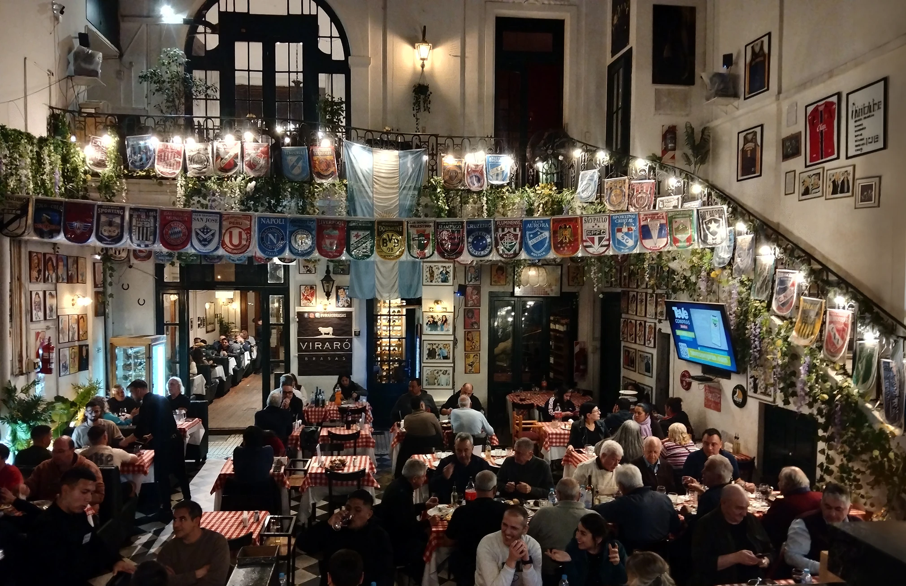
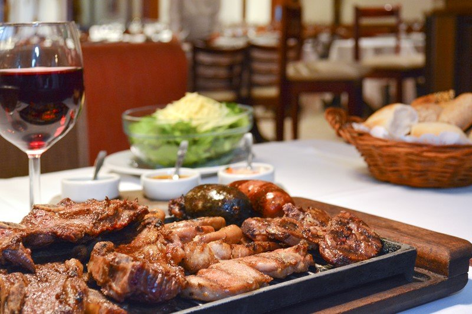
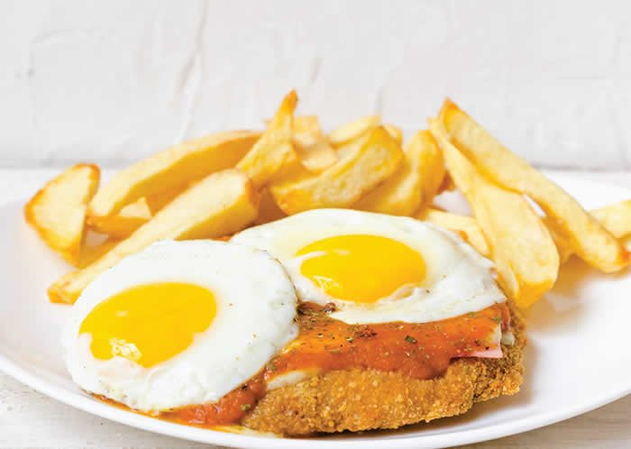
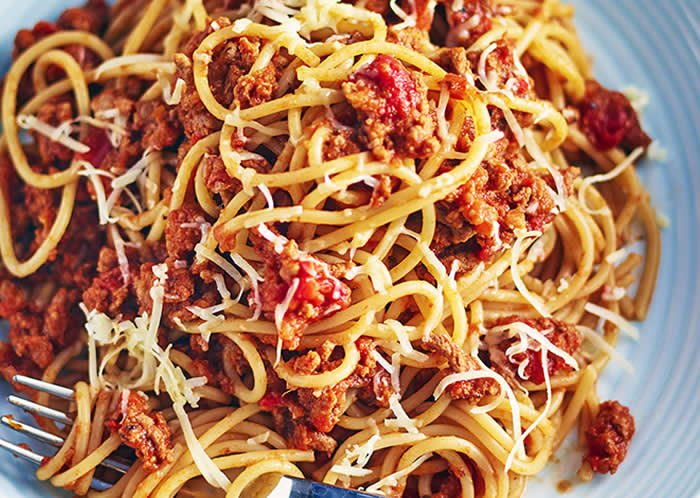
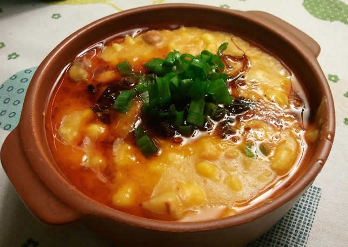
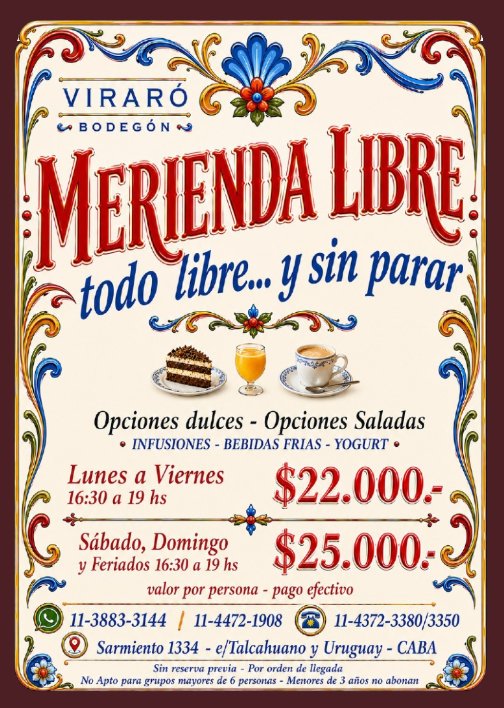

Parrilla argentina
Carnes a las brasas, achuras y el sabor inconfundible de una parrilla bien hecha.

Bodegón · Parrilla · Buenos Aires
Sabores caseros, porciones generosas y precios accesibles en el histórico Club del Progreso, a pasos del Microcentro.
La experiencia Viraró
Viraró es ese bodegón al que venís por una buena parrilla y terminás volviendo por todo: el sabor de lo casero, una carta generosa y la calidez de un patio porteño.
Acá comer bien no tiene que ser complicado ni costoso. Hay platos contundentes para compartir, almuerzos ejecutivos, cenas familiares y encuentros entre amigos.
Carnes a las brasas, achuras y el sabor inconfundible de una parrilla bien hecha.
Pastas, minutas, empanadas y platos abundantes con alma porteña.
Vinos argentinos, patio sereno y un edificio histórico para disfrutar sin apuro.





Una experiencia para compartir
Una mesa desbordante de tortas, frutas, facturas, tostadas, empanadas, pizzas, buñuelos, tortillas y más. Una alternativa abundante para disfrutar en familia o con amigos.
Precio por persona. Pago en efectivo. Sin reserva previa: por orden de llegada. No apto para grupos de más de 6 personas. Menores de 3 años no pagan.
Opiniones públicas
La ficha pública de TodoResto reúne una valoración de 3,9/5 basada en 1.362 opiniones. Consultá la fuente para leer los comentarios completos y conocer las experiencias de otros comensales.
Leer opiniones en TodoRestoPreguntas frecuentes
En Sarmiento 1334, CABA, dentro del histórico Club del Progreso, en el centro de Buenos Aires.
Todos los días. Almuerzos de 12:00 a 16:00 y cenas de 19:00 a 24:00.
Sí. Es un espacio pensado para familias, amigos, almuerzos ejecutivos y encuentros sociales. Para coordinar, escribinos por WhatsApp.
Podés escribir al WhatsApp +54 9 11 3338-3144 o llamar al 011 4372-3350 / 011 4372-3380.
Te esperamos
Sarmiento 1334, CABA · Club del Progreso